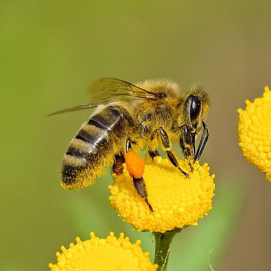

hoje vou falar sobre as abelhas.As abelhas prestam um serviço fundamental para a humanidade e a biodiversidade, pois são responsáveis pela polinização de aproximadamente 73% das plantas no mundo. Sem polinização, não temos produção de alimentos. Em Santa Catarina, o impacto econômico da apicultura vai muito além da produção de mel.
1-Stenotritidae;
2-Oxaeidae;
3-Melittidae.
e Fideliidae apenas contém espécies de abelhas solitárias.
1-Natural: Formadas naturalmente e ocupadas pelas abelhas, como em buracos em árvores, em rochas ou solo.
2-Tradicional: Colmeias feitas pelo homem de forma rústica e totalmente artesanal sem os critérios padronizados de espaço para as abelhas.
De acordo com a organização não-governamental Greenpeace Brasil, entre dezembro de 2018 e março de 2019, mais de meio bilhão de abelhas foram encontradas mortas em diversas regiões do nosso país. Isso porque o Brasil é um dos países que mais utilizam veneno nas plantações,via pulverização aérea e terrestre.